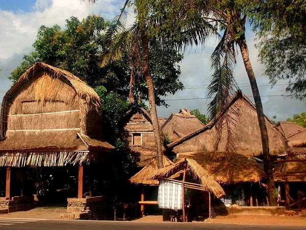

Yuk, mengenal Desa Adat Sade!
Desa Adat Sade adalah salah satu dusun di Desa Rembitan, Pujut, Lombok Tengah. Desa ini dikenal sebagai dusun yang mempertahankan adat Suku Sasak. Masyarakat Sade tinggal di rumah adat yang disebut "Bale", yang atapnya terbuat dari ijuk dan dindingnya dari anyaman bambu. Keunikan lainnya adalah tradisi mengepel lantai menggunakan kotoran sapi atau kerbau yang dipercaya dapat mengusir nyamuk dan menjaga kesucian rumah.
Galeri Foto


Aktivitas Menarik yang bisa kalian coba<3
Ada berbagai hal menarik yang bisa kalian lakukan saat berkunjung loh, kalian dapat:
- Melihat langsung proses pembuatan kain tenun ikat dan songket.
- Belajar menenun bersama pengrajin lokal.
- Berbelanja suvenir khas Lombok seperti gelang, kalung, dan kain.
- Menyaksikan pertunjukan Tari Peresean dan Tari Gendang Beleq (pada waktu tertentu).
- Berkeliling desa sambil mempelajari arsitektur rumah adat Sasak.
Informasi Lokasi
Alamat: Rembitan, Kecamatan Pujut, Kabupaten Lombok Tengah, Nusa Tenggara Barat 83573.
Desa ini berjarak sekitar 30 km dari Kota Mataram dan dapat ditempuh dalam waktu kurang lebih 1 jam perjalanan dengan kendaraan bermotor. Lokasinya sangat strategis karena searah dengan rute menuju Pantai Kuta Mandalika.
Informasi Pengunjung
| Panduan Kunjungan Desa Adat Sade | ||
|---|---|---|
| Kategori | Keterangan | Detail |
| Waktu | Jam Operasional | Senin - Minggu, 08.00 - 19.00 WITA |
| Biaya | Tiket Masuk | Donasi sukarela (seikhlasnya) di pintu masuk |
| Jasa Pemandu Lokal | Tersedia (biaya sukarela) | |
| Fasilitas | Fasilitas Umum | Area parkir yang luas dan toilet umum |
| Pusat Oleh-oleh | Toko suvenir dan sentra kerajinan kain tenun | |